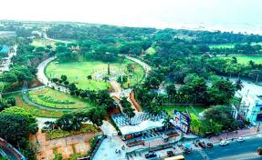

VUDA Park
VUDA Park, also known as Taraka Rama Park, is a popular recreational area in Vizag. It features a musical fountain, boating facilities, and a skating rink, making it a great place for families and children to spend their time.
Location: Visakhapatnam, Andhra Pradesh, India
Activities: Boating, skating, musical fountain, children's play area
Transportation: Easily accessible by road, located near major bus routes and the Vizag railway station.